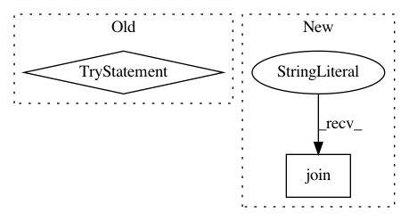

908c0c630a6c7c6e35b7bb0e172d41372bfb309d,python/ray/autoscaler/command_runner.py,SSHCommandRunner,run,#SSHCommandRunner#Any#Any#Any#Any#Any#Any#,291
Before Change
// still create an interactive shell in some ssh versions.
final_cmd.append(quote("while true; do sleep 86400; done"))
try:
if with_output:
return self.process_runner.check_output(final_cmd)
else:
self.process_runner.check_call(final_cmd)
except subprocess.CalledProcessError:
if exit_on_fail:
quoted_cmd = " ".join(final_cmd[:-1] + [quote(final_cmd[-1])])
raise click.ClickException(
"Command failed: \n\n {}\n".format(quoted_cmd)) from None
else:
raise click.ClickException(
"SSH command Failed. See above for the output from the"
" failure.") from None
def run_rsync_up(self, source, target):
self._set_ssh_ip_if_required()
self.process_runner.check_call([
"rsync", "--rsh",
After Change
cli_logger.verbose("Running `{}`", cf.bold(cmd))
with cli_logger.indented():
cli_logger.very_verbose("Full command is `{}`",
cf.bold(" ".join(final_cmd)))
def start_process():
try:
In pattern: SUPERPATTERN
Frequency: 3
Non-data size: 2
Instances
Project Name: ray-project/ray
Commit Name: 908c0c630a6c7c6e35b7bb0e172d41372bfb309d
Time: 2020-07-22
Author: maximsmol@gmail.com
File Name: python/ray/autoscaler/command_runner.py
Class Name: SSHCommandRunner
Method Name: run
Project Name: streamlit/streamlit
Commit Name: 8d6e295859edc8c93a2c5dded536588cf01b55e6
Time: 2018-04-28
Author: adrien.g.treuille@gmail.com
File Name: local/server/streamlit/local/io.py
Class Name:
Method Name: echo
Project Name: OpenMined/PySyft
Commit Name: 4cf7f921f08d59ad28bd41c058a5ae2dd39a2b98
Time: 2020-09-16
Author: me@madhavajay.com
File Name: src/syft/lib/generic.py
Class Name: ObjectConstructor
Method Name: install_id_attribute